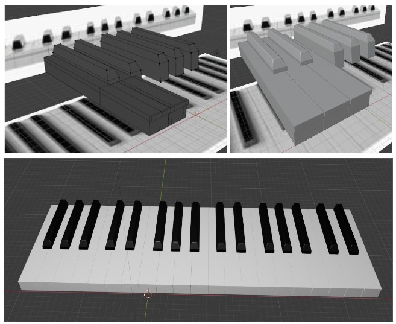

This animation shows a couple of balls that appear to be playfully dancing around to the tune of “He’s a Pirate” from The Pirates of the Caribbean,
playing the song on the piano. This write up will go over my process for the creation of this animation.
I will mention all of the YouTube videos I used in the write up, andI will also provide a list with links at the end.
Learning
I decided that before I even start to create the animation I would need to learn how to use Blender’s tools to effectively animate,
since I had not used Blender before. To do so I started by looking into some YouTube videos, one that caught my eye was “Animation for Beginners!
(Blender Tutorial)” by Ryan King Art. This video showed how to animate a cube bouncing and looking around.
While following the tutorial I learned about how to use keyframes effectively in Blender, as well as how to rotate, translate and scale objects in Blender.
After learning the basics of animation I then decided that I would learn how to make my own models. I once again went to YouTube and found another tutorial;
“Tutorial: Blender MODELLING For Absolute Beginners | Low Poly Girl” by PIXXO 3D. This video taught me how to use the various tools that Blender has for
creating 3D models. First if you have a reference photo to use, you add the reference picture into the blender file, so you can see different angles of what
you want to model. Then you should start with a blender cube, then go into edit mode, here is where you can find all the different tools that blender has for
modeling. The tools that I used for my model were Extrude Region, Bevel, and Loop Cut. I will talk more about these and how I used them in the next section.
Modeling
As stated above, when modeling you should start with a reference photo. I found a photo off google, copied it and placed it into my blender workspace in a way
that I could mirror the shape of the keys to look like real piano keys. When modeling you can use the number pad keys to enter different orthographic views of
your model (top view, side view, etc), this is where the reference photo is most helpful.
When modeling the white keys I started with a blender cube, then made the thickness the same as the image from the front view of the keys. Next I stretched the
cube, from the top view, making it match the size of the tip of the key, up to the tip of the black key (making a rectangular prism of the right size). Then I
used the loop cut tool to cut the rectangular prism evenly where I would need to then use the extrude region tool to make a new rectangular prism that extends
from the selected vertices to make the part of the white key that's in between the black keys. (I hope that makes sense cus it's really hard to explain.) Then I
used the loop cut tool again but horizontally and then used the extrude region tool to make the lip of the piano key. Next I used the bevel tool to bevel the ends
of each key.

The black keys were simpler, since once I had one black key finished, I just had to copy-paste the rest of the keys. I also started with a cube and made it into
a rectangular prism of the right size. Then I used the loop cut tool to cut the key evenly horizontally and just moved the top 2 corners at the front to get an angle.
Next I used the bevel tool. I had to experiment to get the look I wanted.I ended up first beveling left of the key, then the right of the key, and finishing it off
with beveling the front of the key as this order of beveling provided the best looking keys..
For the back of the piano I just used a plane angled 90 degrees, and added text of the song. Then I added a rectangular prism for the bar in front of the piano
and beveled the front to make it more rounded in the front.
I used my piano at home as a reference to help me figure out some of the finer details, like rounding the tip of the white keys, the angle for the tips of the
black keys, and shape of the bar in front.
The hardest part of modeling this was making sure that all the keys were the same height and the spaces in between each key were the same. It was simple math
but it was really tedious. Additionally, for the balls I just used blender’s spheres.